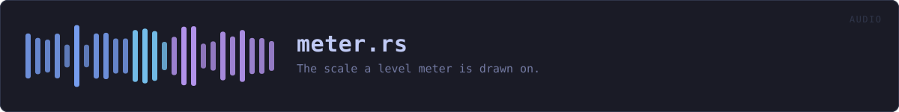

crates/veilvoice-audio/src/meter.rs
veilvoice-audio · 166 lines · read the source here · or on GitHub
The scale a level meter is drawn on.
Why this is here rather than in a front end
crate::live::LiveStats reports a peak, and both front ends draw it. They drew it differently: both were linear, and the desktop one printed a decibel number beside a bar filled linearly, so the number said -12 dB and the bar showed a quarter. Two meters disagreeing about the same reading is worse than one bad meter, because it makes the reader doubt the number.
The scale belongs with the measurement. This module owns the arithmetic; the front ends own how it looks.
Why not linear
Loudness is not linear, and a meter that is has almost no useful range. Ordinary speech recorded at a sensible level peaks around -12 dBFS, which is 0.25 linear: a quarter of the bar, which reads as near-silence. The only way to fill a linear bar is to be clipping. Every real meter is logarithmic for exactly this reason.
What it measures, and what it does not
Sample peak, since the last read. It is not a loudness meter: RMS, LUFS and anything else that correlates with how loud a thing sounds needs a window and a weighting curve, and answers a different question. This one answers "am I being recorded, and am I clipping".
It also cannot see an inter-sample peak, which is a waveform that passes above full scale between two samples and clips in a converter without any single sample exceeding 1.0. Catching those needs oversampling. A front end may say CLIP when a sample reaches full scale, and must not imply it caught the ones it cannot see.
In plain words
This decides how a level meter is drawn, so that the bar and the number beside it always agree.
They did not, once. Both the window and the terminal drew the bar filling evenly with the signal, while the number beside it was in decibels, which do not rise evenly at all. So the number could read -12 dB while the bar looked a quarter full, and a reader who noticed stopped trusting both.
One piece of arithmetic, in one place, used by both. Now they cannot disagree.
WHAT THIS FILE CONTAINS
166 lines defining 3 functions (3 public), 0 types and 2 constants. Everything below is read out of the source, so it cannot disagree with the code.
What happens when it runs. These are the ways in: public, and nothing else in this file calls them, so they are what an outside caller reaches first.
positionline 88 · Where a level sits along a bar: 0.0 at the floor, 1.0 at full scale.
reachesdbfsclippingline 93 · Whether a reading counts as clipping.
reachesdbfs
WHAT CALLS WHAT
The functions this file defines, and the calls between them. An edge means the callee's name appears, called, inside the caller's body. This is a syntactic reading, not a type-resolved one.
The same graph as Mermaid source
%%{init: {"theme":"base","themeVariables":{"background":"#1a1b26","primaryColor":"#1f2335","primaryTextColor":"#c0caf5","primaryBorderColor":"#7aa2f7","secondaryColor":"#16161e","tertiaryColor":"#16161e","lineColor":"#737aa2","textColor":"#c0caf5","mainBkg":"#1f2335","nodeBorder":"#7aa2f7","clusterBkg":"#16161e","clusterBorder":"#2f3549","fontFamily":"ui-monospace, SFMono-Regular, Consolas, monospace","fontSize":"14px"}}}%%
flowchart TD
n_dbfs["dbfs<br/>line 80"]
n_position(["position<br/>line 88"])
n_clipping(["clipping<br/>line 93"])
n_clipping --> n_dbfs
n_position --> n_dbfs
click n_dbfs href "https://github.com/tilas01/veilvoice/blob/main/crates/veilvoice-audio/src/meter.rs#L80" "open the source"
click n_position href "https://github.com/tilas01/veilvoice/blob/main/crates/veilvoice-audio/src/meter.rs#L88" "open the source"
click n_clipping href "https://github.com/tilas01/veilvoice/blob/main/crates/veilvoice-audio/src/meter.rs#L93" "open the source"
classDef entry fill:#1f2335,stroke:#7aa2f7,color:#c0caf5
class n_position,n_clipping entry
classDef api fill:#1f2335,stroke:#7dcfff,color:#c0caf5
class n_dbfs apiThis site loads no third-party script, so it cannot run Mermaid; the diagram above is the same nodes and edges drawn by the generator instead. GitHub renders the source below directly.
ITEMS
| Item | Line | Documentation |
|---|---|---|
FLOOR_DB pub const | 52 | The quietest level worth drawing. |
CLIP_DB pub const | 63 | At or above this, the level is called clipping. |
dbfs pub fn | 80 | Level in decibels relative to full scale. |
position pub fn | 88 | Where a level sits along a bar: 0.0 at the floor, 1.0 at full scale. |
clipping pub fn | 93 | Whether a reading counts as clipping. |